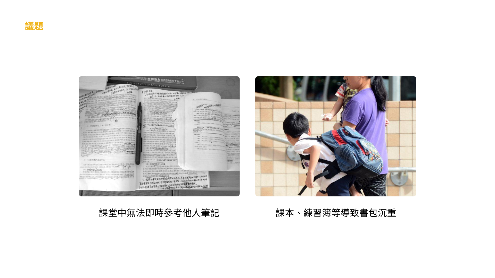
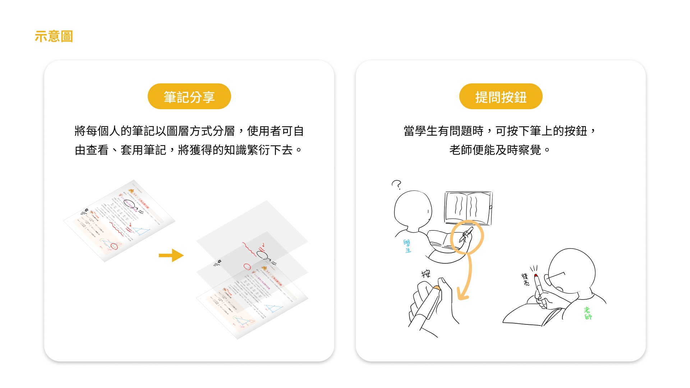
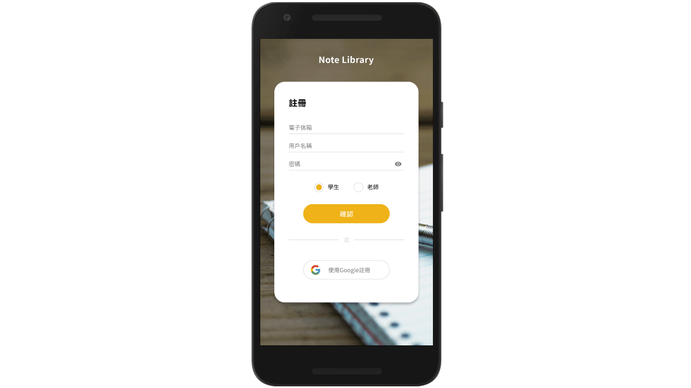
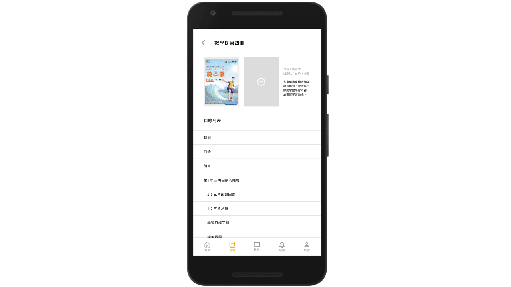
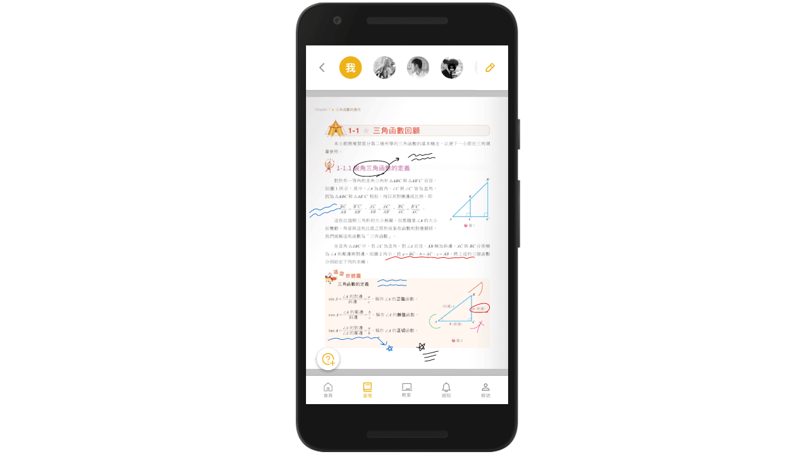
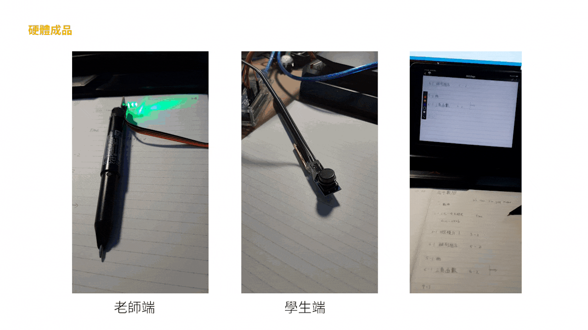

{kind=link}
{kind=link}
{kind=link}
{kind=link}
{kind=link}
{kind=link}
{kind=link}
{kind=link}

0916923107
2021
App
UI
實體裝置
作品介紹
Note Library，是一個將電子書與筆記本結合的學習平台，配合時下嚴重的疫情影響，也有線上教學系統供校方使用，我們結合一款現有手寫筆的技術，讓喜歡在紙上做筆記的使用者能將筆記數位同步到App的功能。
負責項目
｜共同負責項目
企劃發想
｜個人負責項目
App UI設計、影片拍攝及剪輯
作品發想
我們從組員的以往學習經驗以及歷程，發現了兩個問題：
上課中為了聽老師講解，並且邊抄寫筆記，常常無法專心學習。尤其老師們的教學速度不一，造成許多學生來不及完成筆記就被擦掉，降低了學習效益。
從小學入學開始，學童的書包就非常的沉重。研究顯示甚至重達13磅，導致學童的身體產生許多症狀。
為了解決上述兩個問題，我們決定製作一款結合撰寫筆記及電子教科書的App，整體裝置分為App及手寫筆。
App內包含電子教科書及筆記本等功能，學生不但能在App上抄寫筆記，也能查看或套用他人的筆記，讓知識分享、繁衍下去。
手寫筆則是結合現有技術「Neo smartpen Dimo智慧筆」，讓喜歡手寫的使用者也能在自己的筆記本上抄寫筆記，並同步至App中。而我們在筆上額外增加按鈕，讓線上上課的學生也能及時提問。
App中的筆記會透過圖層的方式蓋在教科書上，當使用者不想套用此張筆記時，隨時可透過上方的選單取消掉。而手寫筆上加裝了按鈕以及led燈，當學生有問題時，按下自己筆上的按鈕，老師便能知道這部分有學生不懂，並加以講解。
功能介紹
使用者以高中職的學生為主，學生能在App中找到適合自己的書籍或是老師指定的書，並將實體筆記本的手寫內容同步到空白頁面。
點擊課本上方的使用者頭像，便可查看他人筆記。從中選擇適合自己的筆記，並加以編輯，以創建屬於自己獨一無二的筆記。左下方的按鈕可提問問題，其他學生看到時便能回答。
此頁面可查看學校老師的遠距課程，讓學生在家中也能聽課。也能以積分制來兌換自己有興趣的線上課程。
頁面中可查看誰套用了自己的筆記，以及他人回答自己問題的通知。讓學生能有更多做筆記的動力。
老師端的手寫筆上擁有led燈來即時給予提醒，學生端則擁有按鈕以隨時發問。當使用手寫筆在紙上做筆記時，便會即時同步到App之中。

0916923107